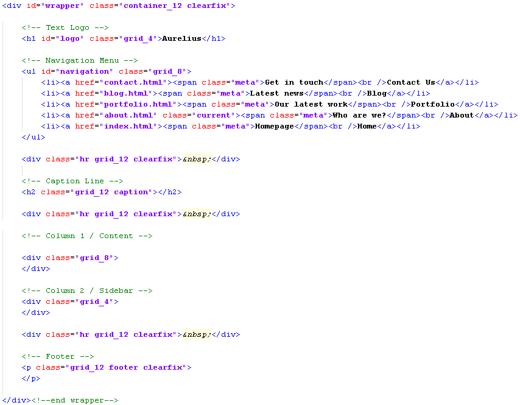
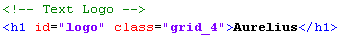
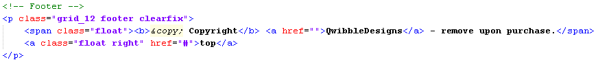
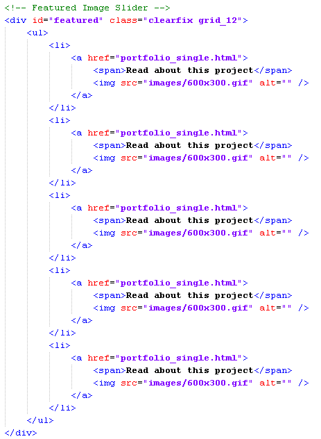
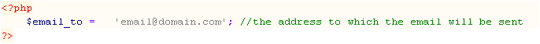

Created : 1/2/10
Author : Matthew Corner
Email : matt@qwibbledesigns.co.uk
Hey there, thank you ever so much for buying my theme; Aurelius. If you want to hear about further updates to this file, or about new files I produce, follow me on twitter at @QwibbleDesigns, or send me an email saying you'd like to hear about further updates via email, and you'll be added to the list.
Aurelius is a HTML/CSS theme, so comes with ready layed out pages for you to work with. As well as Html, and Css though, there are several other file types such as javascript, and php. These are listed below, and briefly explained.
Please note : This theme makes use of Jquery, but pulls it from the google library to improve load time
The theme comes with three predefined canvas's for photoshop; Image Rotator Item, Portfolio Item, and Blog Preview. These are to make your creation of these images with predefined sizes.
The theme also comes with several images, not including the portfolio, and blog images. These are backgrounds for the site, and buttons.
The aurelius theme comes with well commented code, using id's and classes that allow us to easily conclude what each elements does. Each page has general structure that can be seen below.
As you can see, each section of a page is clearly labelled, so you'll never be lost within the file you are adding content to.
As you may have noticed, any site on the internet has stuff such as the page title, the logo name, even possibly a favicon. These brief steps will allow you to personalise your site to your own company / you.
The page title is found within the head of each and every html file in this theme. To change it, you are going to have to edit the following line in every one of those html files.
As you can see it is likely you will want to simply change "Aurelius" part of the title, leaving the name of the current page intact, so that visitors know where they currently are.
You are bound to have noticed the big Aurelius logo in the top left corner of every page, and will definately want to place your own logo in here. The site logo comes in plain text, so I will show you how to input a text logo.
Just like the page title, you will need to change the text within these logo tags on every html page you have. If on the other hand, you wish to impliment an image as a logo rather than text, I recommend you read this article on how to do so.
By default, the footer comes with my name and site in the copyright. This doesnt have to be, and you are more than welcome to edit it to however you want. Like the above two changes, your going to need to make this edit in every html page you have.
Leave the link to the top of the page, it's the line above that you want to edit, with your own name, and your own link.
Most of the content is fairly self explanatory, using standrd html formatting. I can't teach you how to use these html elements, but looking around the html files will get you a long way by simply changing the default place setting text.
The image rotators do much of the work for us. All we really need to do is provide the images and links within a html unordered list like below.
You'll find lists like these on both the portfolio_single, and index pages. They both come with different id's, and these must be left intact for the rotator to work.
As you can see, each item within the list has two specific things inside them, the link with its text wrapped in a span, and the image itself. All you need to do is reference the new image, and input the new link to the project page.
Please Note : The image rotator functions best with five items in it. Keep this in mind when adding new items. this is to feature your best / latest work, not all of you work.
You'll be glad to hear that I couldnt have made it any easier for you! You done need to change any of the html structure or javascript files to have the email sent to you. You simply need to open up config.php, and replace the dummy email with your own. Thats it!, one line of code, and you can test it sending email to you.
Please Note : Make sure the quotation marks are left intact, otherwise the php file will fail no you. Only change the email address.
I sadly cannot claim credit for every element of the Aurelius theme. While the design and layout is 100% mine, some elements were taken from other resources. The following images, icons, and jquery plugins were used.